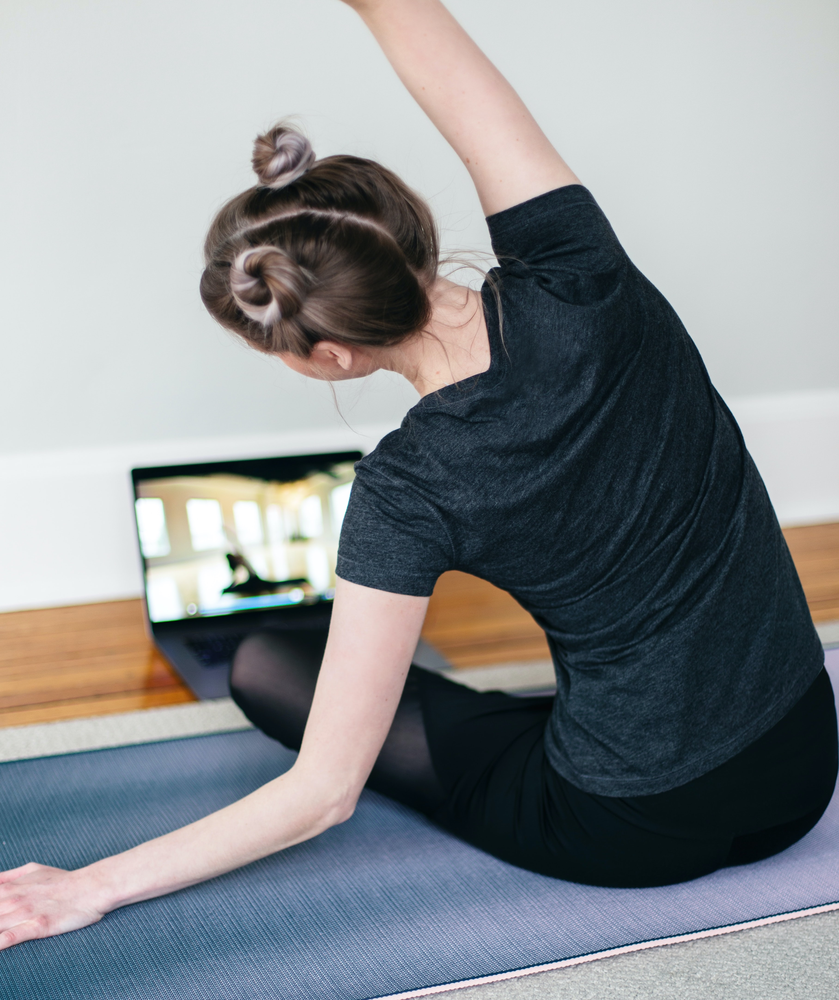

치료방법
스스로 운동하기
(1) 추 운동: 물주전자나 다리미 등 적절한 무게의 물건을 들고 어깨에 힘을 완전히 뺀 상태에서 앞뒤 또는 좌우로 흔들어줍니다.
(2) 벽 짚고 올라가기: 몸을 벽 가까이 하고 손가락으로 벽을 짚어 올라감으로서 팔을 머리위로 들어 올리는 것을 반복합니다.
(3) 날깨뼈 잡아당기기: 손을 뒤로 깍지 낀 채 양쪽어깨를 들어 올리는 것을 반복합니다.
생활 습관 교정하기

(1) 의자에 앉을 때의 자세나 지나친 폭음과 흡연을 삼가해야합니다.
(2) 잠잘 때의 자세나 베게의 높이, 침대의 쿠숀이 너무 딱딱하지 않는지 등을 고려해야합니다.
(3) 정신적인 스트레스를 받지않도록 명상 등 스스로의 노력이 필요합니다.
가까운 병원에 방문하기

보다 나은 치료를 위해서는 무엇보다 전문 의료인을 찾아 정확한 진단을 받은 후에 원인과 증상에 따라 치료를 받는 것이 중요합니다.